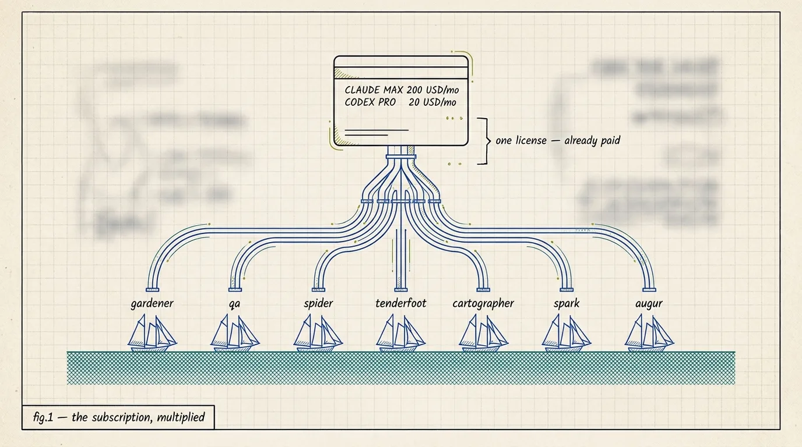
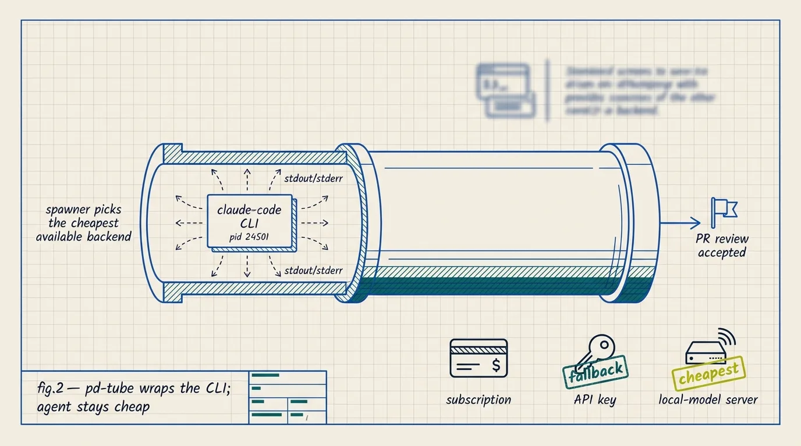
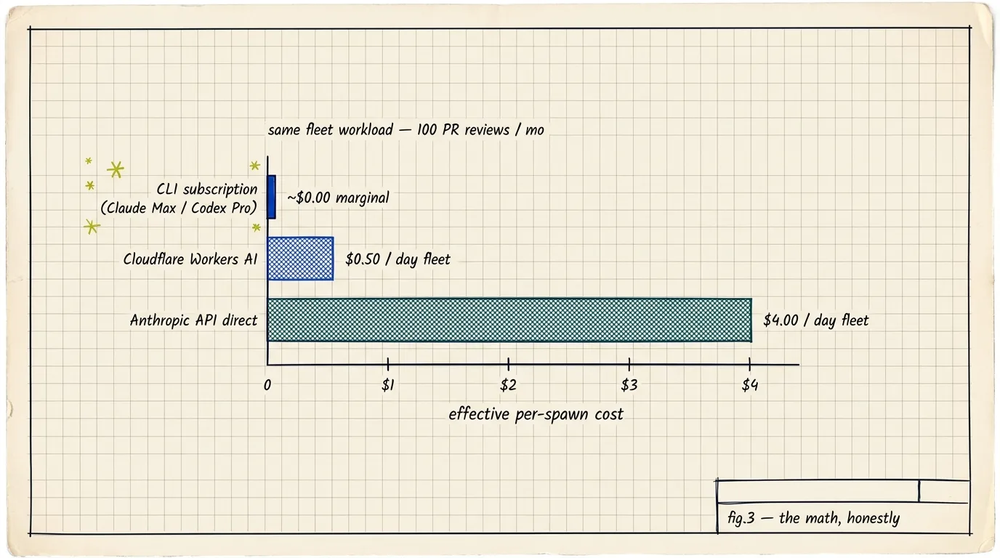

Your AI subscription already pays for the fleet.
You already pay $20 a month for ChatGPT Pro, or $200 for Claude Max. Port Daddy runs your background agents on that same login. Every agent that reviews pull requests, lints commits, and drafts release notes uses the seat you already bought. No extra API bill arrives at the end of the month.
Most agent tools charge you twice. Once for the seat you type into as a person. Again for the API tokens your agents spend overnight. The seat is already paid for. The model is already running. The claude command is already on your PATH. Port Daddy hands the fleet that same command and lets it work in the quiet hours between your own turns.
Setup takes about two minutes: install the daemon, confirm claude or codex is logged in, set one environment variable, start the fleet. The math is in the middle of this page. The honest limits are at the bottom. Read them in any order.
# 1. Install the daemon and CLI brew install curiositech/tap/port-daddy # 2. Confirm your subscription CLI is logged in claude --version # or: codex --version # 3. Point the fleet at your subscription export PD_USE_CLI_BACKEND=claude-cli pd fleet up
That is the whole setup. The fleet now drafts pull-request reviews, lints commits, and writes release notes using the same model you have open in your editor.

pd spawn; the ships are the background agents already listed in your pd-fleet.yml.Port Daddy starts the same CLI you do.
The spawner is a small piece of plumbing. It starts a local CLI process, hands it a prompt, captures the reply, and records the cost. The shape is the same whether the command is claude, codex, aider, or a shell script you wrote yourself.
Port Daddy runs claude --print "…" (or codex exec …) as a child process of the daemon, in your project directory, under the agent's identity, with a time limit.
The prompt goes in on stdin. The reply comes back on stdout. Errors feed the activity log. Everything is saved to the session transcript, so you can read back the work after the process exits.
On a subscription CLI the cost of each spawn is $0.00, because the model is already paid for. Port Daddy still logs the wall-clock time and token count, so you can watch the pace without watching a bill grow.
The transcript, exit code, and any tool calls land in the session record. pd timeline shows it like any other agent run. A subscription backend is not a special case.

Same work, three bills.
Picture a small fleet — gardener, qa, spider, spark — handling about 100 pull-request reviews and 600 short summaries a month. The work does not change. Only what you pay for it does.
| Backend | Fixed cost | Marginal per spawn | Monthly bill |
|---|---|---|---|
| Your subscription — Claude Max or ChatGPT Pro | $20–$200 / mo, already paid | $0.00 | Nothing on top of your seat |
| Cloudflare Workers AI — Qwen3 30B, a fallback | $0 | about $0.005 / spawn | about $15 / mo |
| Anthropic API direct — Sonnet via SDK, a fallback | $0 | about $0.04 / spawn | about $120 / mo |
A mid-sized open-source repo gets about 100 pull requests a month. Each review is one spawn of the qa agent: three to five minutes, a modest number of tokens.
- Your subscription: $0 on top of the $200/mo Max seat you already pay for.
- Cloudflare Workers AI: about $0.50 in inference. The cheapest option if you do not have a subscription.
- Anthropic API direct: about $4.00. The same model the seat gives you, but billed per call.
If you already use Claude Max in your editor, the first row costs you nothing extra. You were going to pay for the seat anyway.

Three commands, about two minutes.
There is no plugin to install and no API key to rotate. If your CLI is on your PATH and the daemon is running, the fleet can use it.
brew install curiositech/tap/port-daddyDaemon, CLI, and MCP server in one Homebrew formula. It starts on its own through launchd. Run pd status to confirm it is up.
claude --version # for Claude Max codex --version # for ChatGPT Pro
The CLI you use as a person is the one the fleet will use. If --version prints a number, you are done: the command is on your PATH and logged in.
export PD_USE_CLI_BACKEND=claude-cli # or PD_USE_CLI_BACKEND=codex pd fleet up
Set the variable in your shell startup file, or name the backend per agent in pd-fleet.yml. The cost ledger will start showing $0.00 for each spawn.
When to use it. When to skip it.
This setup is a strong fit, but a narrow one. If you already pay for a seat, the math is hard to beat. If you don't, Cloudflare Workers AI is cheap and a fine default. Picking that instead is a reasonable call.
- You use
claudeorcodexin your editor every day. - You want background agents to draft, review, and summarize without a second invoice arriving.
- You want every spawn on record. The transcripts sit in the same timeline as the work you do by hand.
- You can live with your own CLI slowing down for a moment when the fleet is busy. See the limits below.
- You do not have Max or Pro and do not want one. Cloudflare Workers AI on Qwen3 is the cheap default.
- You need agents on a machine without your login: a CI box, a remote build node, a server you do not sit at.
- You need an exact cost for every call, for billing or chargeback. A subscription seat does not break the cost down that way.
- You need a model the subscription does not offer, like Gemini, a fine-tune, or a vision-heavy job. Use the direct API.
What to expect.
Subscription terms exist for a reason. Anthropic and OpenAI both meter usage by the hour underneath, and a fleet that runs too hot will run into those limits. Here is what that looks like, and the dial that keeps it tame.
Claude Max and ChatGPT Pro both set an hourly usage budget. It is generous for one person and tight for a fleet. If the agents use too much in a short window, the CLI asks you to wait, the same way it would for a fast-typing human.
While the fleet runs on your seat, your own Claude Code or Codex calls draw from the same budget. Most of the time you will not notice. Now and then you will see a wait-a-moment banner when two agents fire at once. A daily cap per agent keeps your own work fast.
Each agent in pd-fleet.yml takes a budget_usd_per_day and a max_spawns_per_hour. On a subscription the dollar cap maps to a token estimate; the spawn-rate cap is the real lever. Start low, around three spawns an hour for the qa agent, watch the ledger, and raise it as you trust it.
Anthropic and OpenAI both allow programmatic use of their CLIs from the account holder's own machine. Neither allows reselling the inference or spreading it across accounts you do not own. Port Daddy stays on the first side of that line: your agents, your machine, your seat.
Three commands. Your subscription does the rest.
If you already pay for Claude Max or ChatGPT Pro, this is the smallest change you can make: same model, same login, more hours of work in a day.
export PD_USE_CLI_BACKEND=claude-cli
pd fleet up